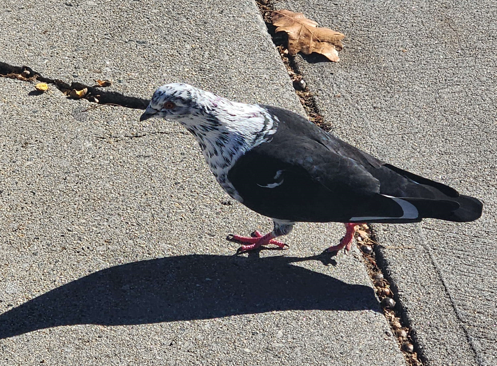
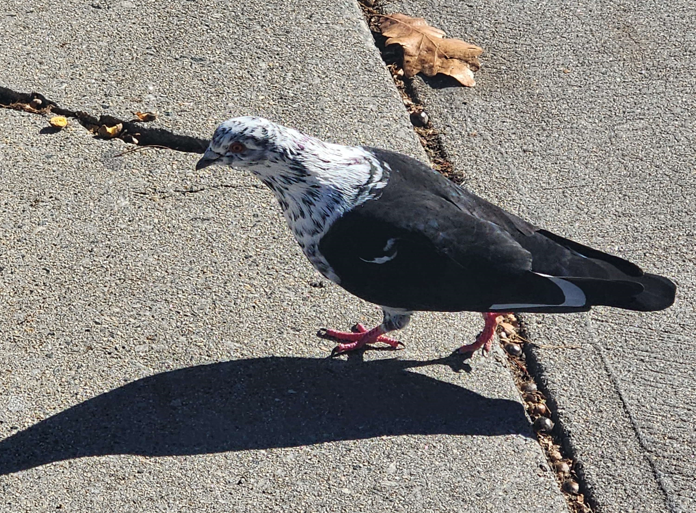
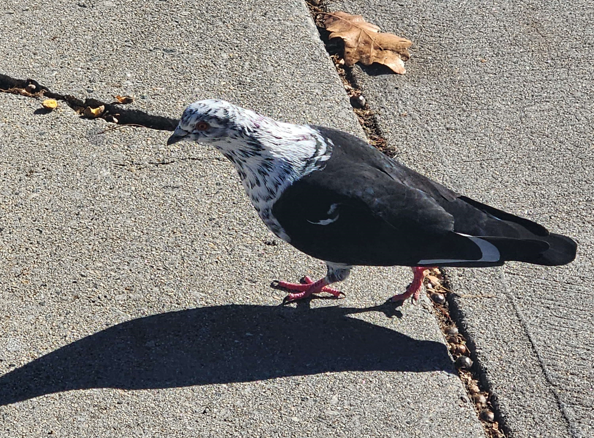
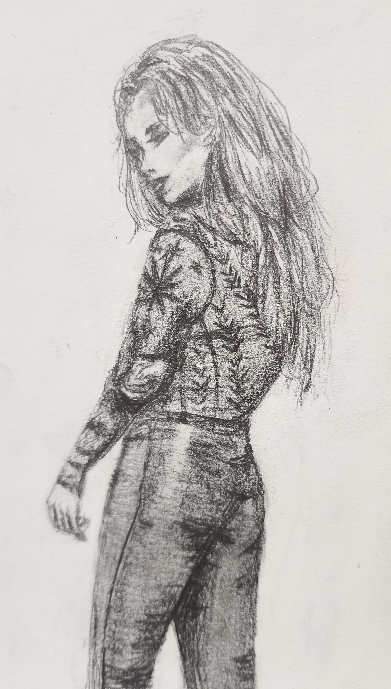
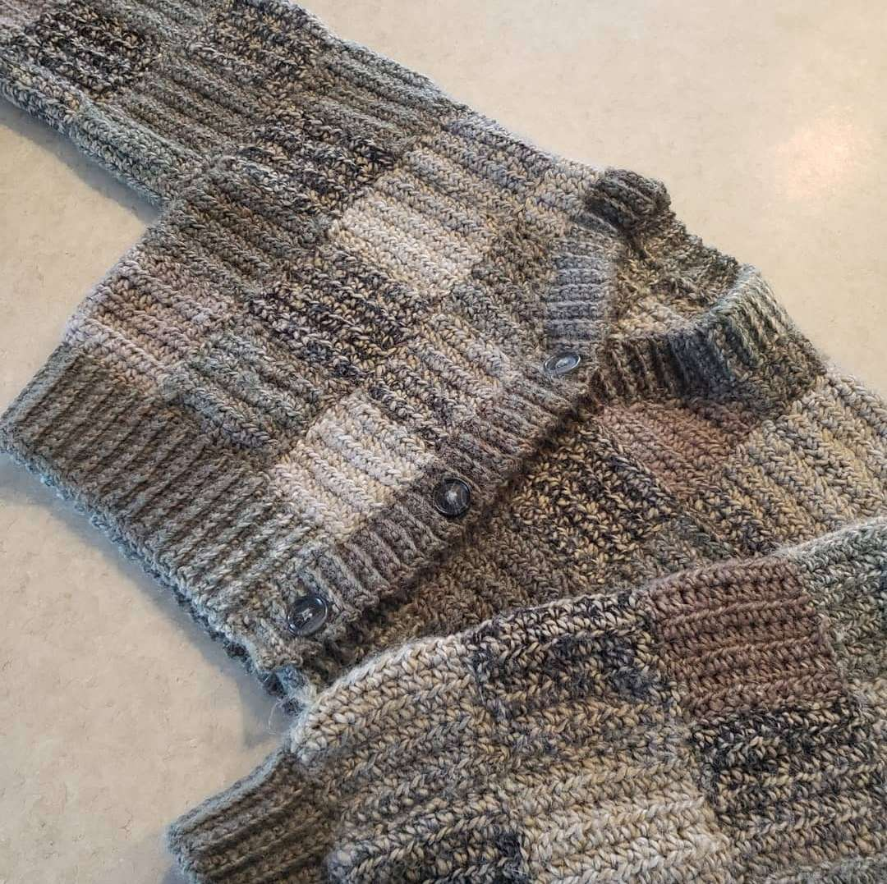
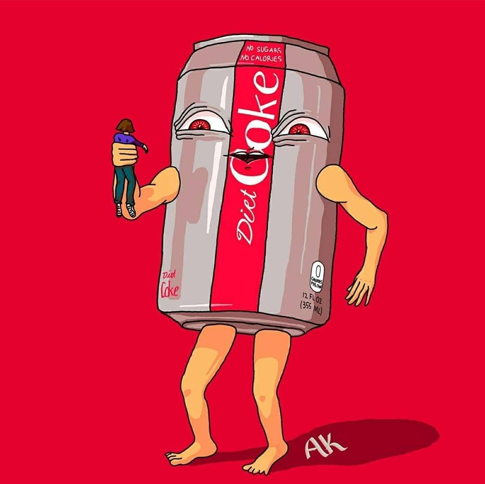
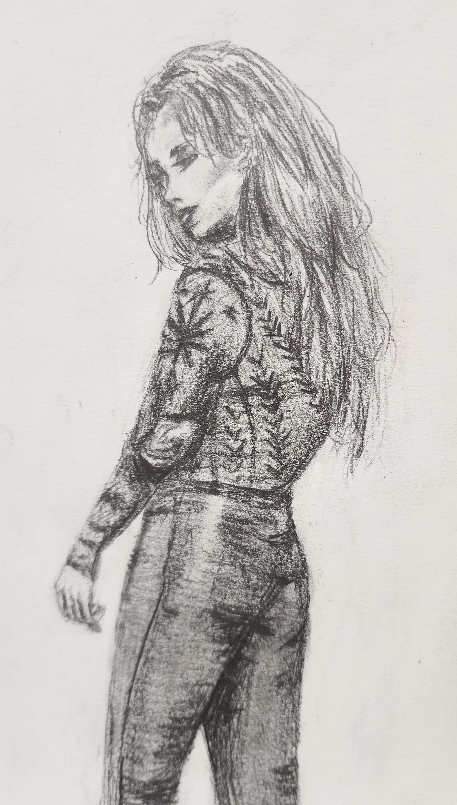
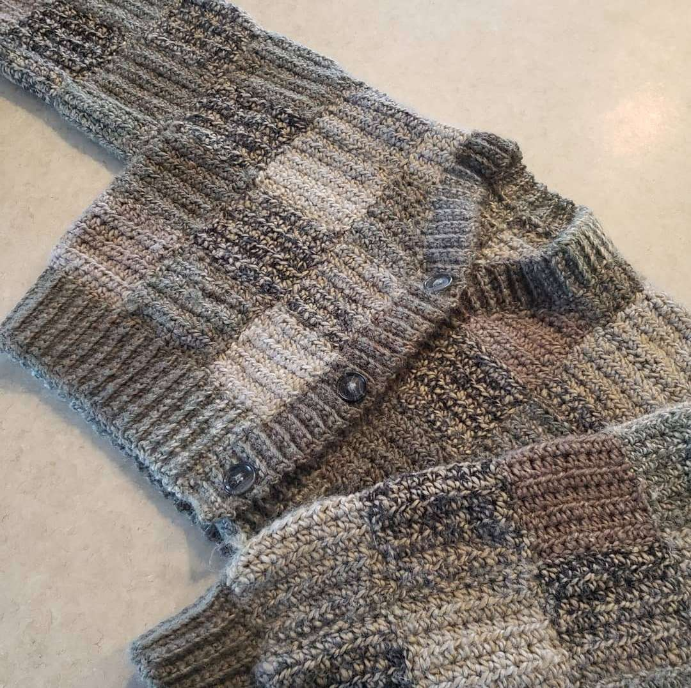
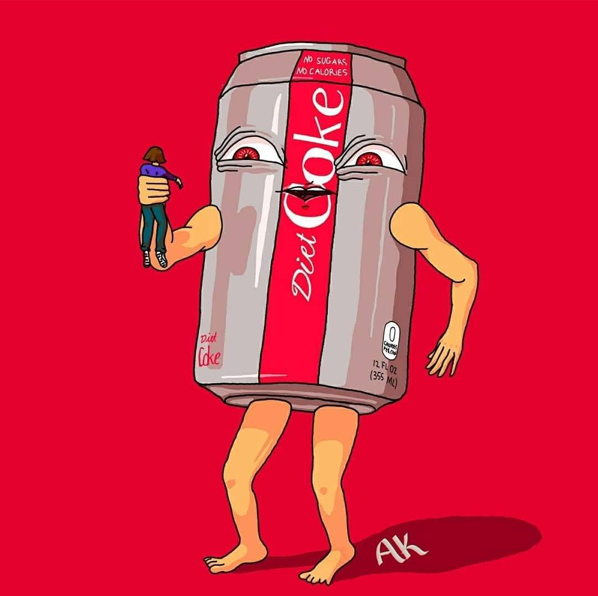

Birds
I love birds so much. I do the Birdle everyday, and I identify city birds each time I walk to class.
 

I love birds so much. I do the Birdle everyday, and I identify city birds each time I walk to class.

My (cursed) art instagram is @radiumisthenewcalcium and my fiber/textile arts instagram is @jelly__crochet.
 




